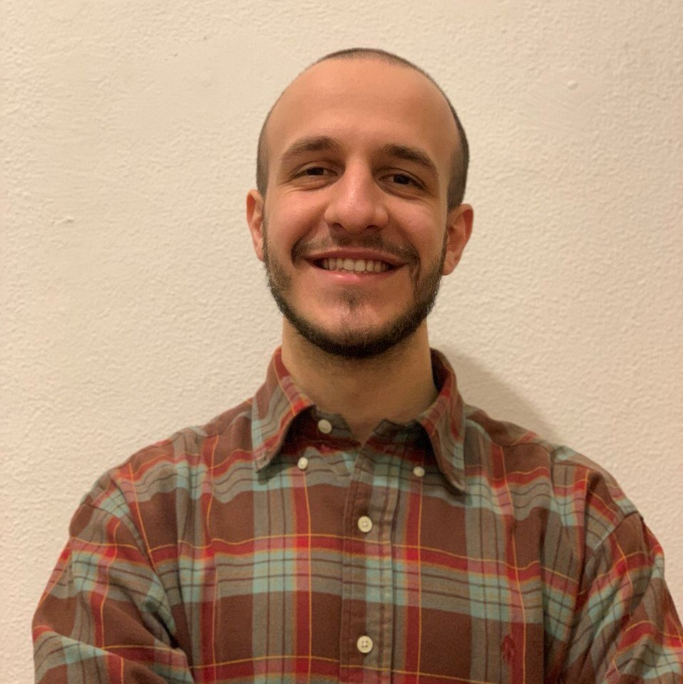

Davide Salaorni
PhD Candidate
Politecnico di Milano
Download my Extended Curriculum Vitae.
News
2026
- I'm joining the organizing committee for the 2026 edition of the Reinforcement Learning Summer School (RLSS) in Milan!
- I've coded the ELLIS Italy website! Check out the website.
- Our new preprint, "Learning in Markov Decision Processes with Exogenous Dynamics," is now available on arXiv.
2025
- I'm attending EWRL 2025 in Tübingen, Germany, to present our new benchmark suite for evaluating reinforcement learning in realistic domains, Gym4ReaL.
- Excited to be participating in the Machine Learning Summer School 2025 (MLSS) in Arequipa, Peru!
- One paper and one workshop paper accepted at IJCNN 2025 in Rome, Italy! I also received the IJCNN 2025 Student Travel Grant for my contribution. Check out the proceedings. I'm also chairing the session Reinforcement Learning II.
- Our paper on digital twins for battery energy storage systems has been published in the Journal of Energy Storage.
- I'm giving a talk on Deterministic Policy Gradient Methods at the AirLab RL3 PhD meetings at Politecnico di Milano.
2024
- I'm attending EWRL 2024 in Toulouse, France. Come say hi if you are there!
- I'm giving a talk on Reinforcement Learning at the RSE Academy Seminar in Milan! Check out the slides.
- Our paper regarding the Air Hockey Challenge 2023 has been accepted at the NeurIPS Competition Track 2023 and is available here.
2023
- Transitioning from student to teacher! I'm serving as an adjunct lecturer for the Informatica B course (B.Sc. in Mechanical Engineering) at Politecnico di Milano, under the supervision of Prof. Francesco Trovò.
- We're participating in the Air Hockey Challenge 2023, placing in the top 5 teams! Check out the leaderboard.
- I'm attending the Synapse 2023 - AI Symposium in Milan, Italy!
2022
- Leaving my position as Junior Performance Consultant at Moviri S.p.A. to start my Ph.D. at Politecnico di Milano!
- I'm presenting our work on optimal real-time control of water distribution systems undergoing cyber-attacks at the 2nd IFAC Workshop on Control Methods for Water Resource Systems (CMWRS) in Milan, Italy.
- We're presenting our work on optimal real-time control of water distribution systems undergoing cyber-attacks at the EGU General Assembly 2022 in Vienna, Austria.
Publications
International Conferences
[C1] Davide Salaorni, Federico Bianchi, Francesco Trovò and Marcello Restelli.
A Reinforcement Learning Approach for Optimal Control in Microgrids.
Proceedings of the IEEE International Joint Conference on Neural Network (IJCNN), Rome, Italy. 2025.
[Link]
[Paper]
[Slides]
[C2] Andrés Murillo, Davide Salaorni, Riccardo Taormina and Stefano Galelli.
Optimal real-time control of water distribution systems undergoing cyber-physical attacks (Abstract).
EGU General Assembly, Vienna, Austria. 2022.
[Link]
[Slides]
Journals
[J1] Davide Salaorni, Federico Bianchi, Silvia Colnago, Andrea Barisione, Francesco Trovò and Marcello Restelli.
A novel digital twin for battery energy storage systems in micro-grids.
Journal of Energy Storage, Elsevier. 2025.
[Link]
[J2] Andrés Murillo, Riccardo Taormina, Nils Ole Tippenhauer, Davide Salaorni, Robert van Dijk, Luc Jonker, Simcha Vos, Maarten Weyns, Stefano Galelli.
High-fidelity cyber and physical simulation of water distribution systems. I: Models and Data.
Journal of Water Resources Planning and Management, ASCE. 2023.
[Link]
Workshops
[W1] Davide Salaorni, Vincenzo De Paola, Samuele Delpero, Giovanni Dispoto, Paolo Bonetti, Alessio Russo, Giuseppe Calcagno, Francesco Trovò, Matteo Papini, Alberto Maria Metelli, Marco Mussi and Marcello Restelli.
Gym4ReaL: A Benchmark Suite for Evaluating Reinforcement Learning in Realistic Domains.
European Workshop on Reinforcement Learning (EWRL), Tubingen, Germany. 2025.
[Link]
[Paper]
[Poster]
[W2] Samuele Delpero, Davide Salaorni and Marcello Restelli.
Optimal Energy Management of Renewable Energy Communities: a Multi-Agent Reinforcement Learning Approach.
Machine Learning for Sustainable Power Systems (ML4SPS), ECML-PKDD, Porto, Portugal. 2025.
[Paper]
[Slides]
[W3] Davide Salaorni, Federico Bianchi, Francesco Trovò and Marcello Restelli.
Leveraging Reinforcement Learning for Micro-grid Optimal Control.
Deep Learning Techniques for Observable Smart Grid and Sustainable Energy Systems (DLT-4-OSGE), IJCNN, Rome, Italy. 2025.
[Paper]
[Slides]
[W4] Davide Salaorni, Andrés Murillo, Marcello Restelli and Stefano Galelli.
Optimal Real Time Control of Water Distribution System undergoing Cyber-Attacks: a Reinforcement Learning approach.
2nd IFAC Workshop on Control Methods for Water Resource Systems (CMWRS), Milan, Italy. 2022.
[Link]
Book Chapters
[B1] Davide Salaorni, Federico Bianchi, Marcello Restelli and Francesco Trovò.
Automatic Control and Reinforcement Learning Techniques for Microgrids.
Advances in Digital Twin Computing and Sensor Networks, Elsevier. Under review.
[Link - To Appear]
Preprints
[P1] Davide Maran*, Davide Salaorni* and Marcello Restelli.
Learning in Markov Decision Processes with Exogenous Dynamics. ArXiv:2603.02862. 2026
[Paper]
[P2] Davide Salaorni, Vincenzo De Paola, Samuele Delpero, Giovanni Dispoto, Paolo Bonetti, Alessio Russo, Giuseppe Calcagno, Francesco Trovò, Matteo Papini, Alberto Maria Metelli, Marco Mussi and Marcello Restelli.
Gym4ReaL: A Suite for Benchmarking Real-World Reinforcement Learning. ArXiv:2507.00257. 2025.
[Paper]
Talks and Seminars
[T1] Deterministic Policy Gradient Methods, AirLab RL3 PhD meetings, Politecnico di Milano (Feb 2025).[T2] An introduction to Reinforcement Learning, RSE Academy Seminar, RSE S.p.A. (Mar 2024).
Education
Ph.D. in Information Technology - Politecnico di Milano, Milan, Italy (Nov 2022 - now)
Main focus: Reinforcement Learning for real-world systems with a specific focus on energy systems
Supervisors: Prof. Marcello Restelli and Prof. Francesco Trovò
Scholarship: Financed by Ricerca sul Sistema Energetico (RSE S.p.A.)
Relevant coursework: Reinforcement Learning, Online Learning and Monitoring, Multi-Agent Learning: from Theory to Practice, Stochastic Dynamic Programming, Advanced Topics in Deep Learning: the Rise of Transformers
[Thesis - To Appear]
[Slides - To Appear]
M.Sc. in Computer Science and Engineering - Politecnico di Milano, Milan, Italy (Mar 2019 - Dec 2021)
Main focus: Artificial Intelligence and Machine Learning
Thesis: Optimal Real-time Control of Water Distribution Systems undergoing Cyber-Attacks: A Reinforcement Learning Approach
Supervisors: Prof. Marcello Restelli and Prof. Stefano Galelli (Singapore University of Technology and Design)
Relevant coursework: Machine Learning, Artificial Intelligence, Game Theory, Recommender Systems, Foundations of Operational Research, Software Engineering II, Principles of Programming Languages.
B.Sc. in Engineering of Computing Systems - Politecnico di Milano, Milan, Italy (Sep 2015 - Mar 2019)
Relevant coursework: Software Engineering, Theoretical Computer Science, Communication Networks and Internet, Computer Architecture and Operating Systems, Linear Algebra and Geometry, Logics and Algebra, Statistics and Probability, Physics.
High School Scientific Diploma - Liceo Giovanni Cotta, Legnago, Verona, Italy (Sep 2010 - Jul 2015)
Main Focus: Scientific subjects with a focus on mathematics and physics.
Work Experience
Ph.D. Researcher - Ricerca sul Sistema Energetico (RSE S.p.A.), Milan, Italy (Nov 2022 - Nov 2025)
Goal: Development of Digital Twins for battery energy storage systems and integration with Machine Learning techniques for real-time monitoring and optimal energy management in micro-grids and renewable energy communities.
Junior Performance Consultant - Moviri S.p.A., Milan, Italy (Oct 2021 - Oct 2022)
Goal: As member of the Monitoring and Observability team, I was responsible for the Dynatrace platform management and customization for enterprise clients.
Research Activities
Teaching Activities
Adjunct Lecturer Informatica B - Prof. Francesco Trovò
B.Sc. in Mechanical Engineering, Politecnico di Milano (Sep 2024 - Feb 2025)
Adjunct Lecturer Informatica B - Prof. Francesco Trovò
B.Sc. in Mechanical Engineering, Politecnico di Milano (Sep 2023 - Feb 2024)
Serving as Reviewer
- NeurIPS (2025, 2026)
- ICML (2025, 2026)
- ICLR (2026)
- IJCNN (2025)
- EWRL (2025)
- TNNLS, PONE, RA-L, TMLR
Contacts
Email
davide DOT salaorni AT polimi DOT it
Personal Email
davidesalaorni AT gmail DOT com
Office
Office 21, First Floor of Building 21
Dipartimento di Elettronica, Informazione e Bioingegneria
Politecnico di Milano
Via Ponzio 34/5, Milan, 20133, Italy